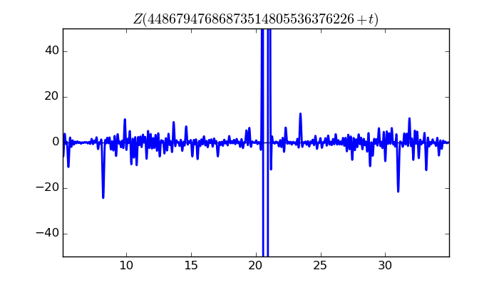
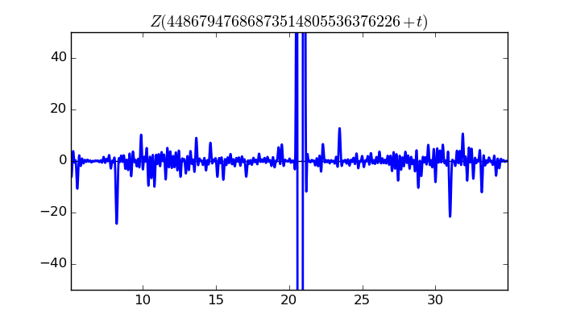
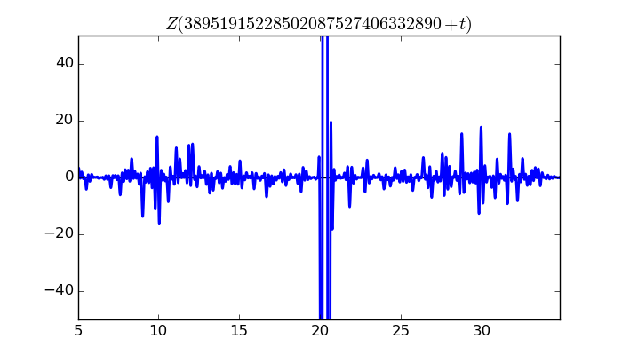
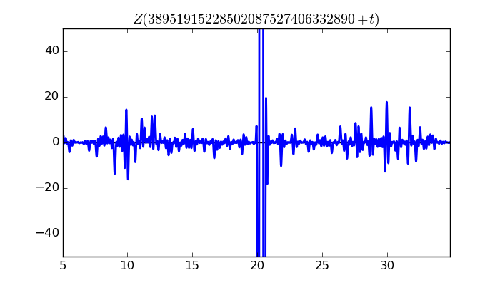

Computations of the Riemann zeta function
These pages sorted by the size of $t$
These pages sorted by the size of $Z(t)$
These pages sorted by the size of $S(t)$
Here are some pictures of and information about $Z(t)$
and $S(t)$ for some large values of $t$. The $Z$ function is the zeta function on the critical line, rotated
so that it is real, so
\[
Z(t) = e^{i Arg(\zeta(1/2 + it)} \zeta(1/2 + it)
\]
$S(t)$ is
the argument of $\zeta(1/2 + it)$, properly interpreted. In some way, it measures irregularity in the distribution
of the zeros of the zeta function.
These are from computations run by Ghaith Hiary and myself, based on the algorithm described
in Ghaith's paper (also available
at the arXiv).
These computations have been run on a variety of machines. Initially, we used machines on the Sage cluster
at the University of Washington (thanks to William Stein and the NSF), then later the riemann cluster
at University of Waterloo (thanks to Mike Rubinstein). Currently, computations are being run at the
University of Bristol on the LMFDB machines (funded by
EPSRC) and on
BlueCrystal.
If your web browser window is big enough, in the top right of each section below you will
see a plot of Z(t), in the bottom left you will see S(t), and in the bottom right you will see
a zoomed in plot of Z(t). Things are sized roughly so that this looks good on my 1080p monitor.
The images are all links that will take you to a zoomable version of the plot.
You can click on any image for a bigger version. Also, you can look at a list of all of the images:
Z(t) or S(t).
See also:
-
Ghaith Hiary's similar description of these computation.
-
Slides (with some typos and bad mistakes)
from a talk I gave on this stuff at MSRI in April 2011. Paper coming one day.
-
The LMFDB, which should contain this data some day.
Page 0 Page 1 Page 2 Page 3 Page 4 Page 5 Page 6 Page 7 Page 8 Page 9 Page 10 Page 11 Page 12 Page 13 Page 14 Page 15 Page 16 Page 17 Page 18 Page 19 Page 20 Page 21 Page 22
Page 11
$\zeta(1/2 + it)$ around $t = 77590565202125505656738011622 \approx 7.75905652021 \times 10^{ 28 }$
Largest value of $Z(t)$ in this graph:-1985.875308
Value of $t$ for which the maximum occurs:77590565202125505656738011642.06399609
Value of $\zeta(1/2 + it)$:$1317.67109 + 1485.746829i$
Maximum of $S(t)$ in this range:3.143148894


$\zeta(1/2 + it)$ around $t = 77569920220331685642812156730 \approx 7.75699202203 \times 10^{ 28 }$
Largest value of $Z(t)$ in this graph:8285.637599
Value of $t$ for which the maximum occurs:77569920220331685642812156750.51899609
Value of $\zeta(1/2 + it)$:$7580.279693 + 3345.317651i$
Maximum of $S(t)$ in this range:2.752073076


$\zeta(1/2 + it)$ around $t = 77197823425564908095288722823 \approx 7.71978234256 \times 10^{ 28 }$
Largest value of $Z(t)$ in this graph:4577.089147
Value of $t$ for which the maximum occurs:77197823425564908095288722843.27999609
Value of $\zeta(1/2 + it)$:$4575.950913 + 102.0701095i$
Maximum of $S(t)$ in this range:-2.552270039

$\zeta(1/2 + it)$ around $t = 69283136738573030099505979364 \approx 6.92831367386 \times 10^{ 28 }$
Largest value of $Z(t)$ in this graph:6594.411432
Value of $t$ for which the maximum occurs:69283136738573030099505979384.60300391
Value of $\zeta(1/2 + it)$:$6310.067016 + 1915.545975i$
Maximum of $S(t)$ in this range:2.590370895


$\zeta(1/2 + it)$ around $t = 65242659578329486541993870525 \approx 6.52426595783 \times 10^{ 28 }$
Largest value of $Z(t)$ in this graph:7574.336071
Value of $t$ for which the maximum occurs:65242659578329486541993870545.83349609
Value of $\zeta(1/2 + it)$:$7573.885503 - 82.61539614i$
Maximum of $S(t)$ in this range:2.576834853


$\zeta(1/2 + it)$ around $t = 58755046149007347602141184542 \approx 5.8755046149 \times 10^{ 28 }$
Largest value of $Z(t)$ in this graph:6909.736032
Value of $t$ for which the maximum occurs:58755046149007347602141184562.68842578
Value of $\zeta(1/2 + it)$:$2757.813339 - 6335.528204i$
Maximum of $S(t)$ in this range:-2.950849732


$\zeta(1/2 + it)$ around $t = 46709141854660972368505489012 \approx 4.67091418547 \times 10^{ 28 }$
Largest value of $Z(t)$ in this graph:9588.153211
Value of $t$ for which the maximum occurs:46709141854660972368505489032.74299609
Value of $\zeta(1/2 + it)$:$8574.576809 - 4290.607712i$
Maximum of $S(t)$ in this range:-3.034957494


$\zeta(1/2 + it)$ around $t = 44867947686873514805536376226 \approx 4.48679476869 \times 10^{ 28 }$
Largest value of $Z(t)$ in this graph:-6138.274906
Value of $t$ for which the maximum occurs:44867947686873514805536376246.77722266
Value of $\zeta(1/2 + it)$:$5360.430311 + 2990.686493i$
Maximum of $S(t)$ in this range:2.811279888

 

$\zeta(1/2 + it)$ around $t = 39042432452317384450794590094 \approx 3.90424324523 \times 10^{ 28 }$
Largest value of $Z(t)$ in this graph:-4309.297765
Value of $t$ for which the maximum occurs:39042432452317384450794590114.70899609
Value of $\zeta(1/2 + it)$:$4009.158918 - 1580.092403i$
Maximum of $S(t)$ in this range:-2.612394546

$\zeta(1/2 + it)$ around $t = 38951915228502087527406332890 \approx 3.89519152285 \times 10^{ 28 }$
Largest value of $Z(t)$ in this graph:3749.919667
Value of $t$ for which the maximum occurs:38951915228502087527406332910.31514453
Value of $\zeta(1/2 + it)$:$3125.122665 + 2072.560213i$
Maximum of $S(t)$ in this range:2.764219633
 
